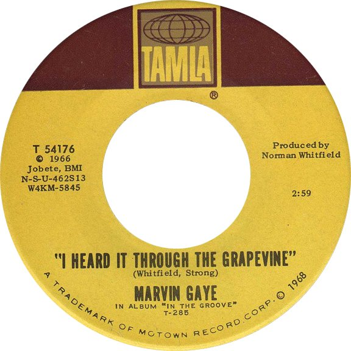

I Heard It Through the Grapevine by Marvin Gaye was recorded in 1967, shelved by Berry Gordy, and released as a single on October 30, 1968.
Six weeks later it was No. 1 in America, and it stayed there for seven weeks.
It was Gaye's first No. 1 pop hit and, at the time, Motown's biggest-selling single.

Table of Contents
- Who Wrote Grapevine?
- Five Sessions in 1967
- Gladys Knight Got There First
- The DJs Force a Single
- Raisins, Jeans and Eleven Minutes of Creedence
- FAQ
Who Wrote Grapevine?
Norman Whitfield and Barrett Strong wrote it for Motown in 1966.
Strong got the idea in Chicago, where people kept saying they had heard things "through the grapevine."
The phrase is older than the record by a century.
Wikipedia notes historians link it to enslaved people's "grapevine telegraph" in the Civil War era.
The singer learns secondhand that his partner is leaving, and that hurts most of all.
Five Sessions in 1967
The Miracles cut the song first, on August 6, 1966.
Gordy vetoed it, and their take sat unreleased until the 1968 album Special Occasion.
Whitfield then rebuilt it as a slow, brooding piece in E-flat minor for Gaye.
He recorded Gaye over five sessions at Hitsville U.S.A.'s Studio A in Detroit, from February 3 to April 10, 1967.
- Earl Van Dyke: Hammond organ
- James Jamerson: bass
- Uriel Jones and Richard "Pistol" Allen: drums
- The Andantes: backing vocals
- Paul Riser: strings for Detroit Symphony players
A Voice Pushed Higher
Whitfield made Gaye sing above his comfortable range and ran take after take.
The strain is the point: Gaye sounds like a man barely holding on.
Gladys Knight Got There First
Motown's Quality Control meeting liked the track, but Gordy blocked it.
He chose the Holland-Dozier-Holland song "Your Unchanging Love" instead.
"I personally liked 'Grapevine' better," Gordy wrote in his autobiography, but the other record was "more in the romantic vein" of what Gaye needed.
Whitfield cut a fast, gospel-charged version with Gladys Knight & the Pips on June 17, 1967.
Released on Motown's Soul label in September, it went to No. 1 R&B for six weeks and No. 2 on the Hot 100.
The DJs Force a Single
In August 1968 Gaye's version finally surfaced as an album track on In the Groove.
Chicago's WVON began spinning it, and listeners flooded the phones.
"The DJs played it so much off the album that we had to release it as a single," Gordy said.
Tamla issued the single on October 30, 1968.
It entered the Hot 100 at No. 34 and hit No. 1 on December 14.
| Chart | Peak |
|---|---|
| Billboard Hot 100 (US) | 1 (7 weeks) |
| Billboard R&B (US) | 1 (7 weeks) |
| UK Singles Chart | 1 (3 weeks) |
| Ireland | 7 |
| Canada (RPM) | 8 |
No Motown record held the Hot 100 top spot longer until "Endless Love" in 1981.
In Britain, Official Charts shows three weeks at No. 1 in spring 1969 and 15 weeks on the chart.
The single sold more than four million copies, and Motown renamed the album after it.
It closed out the year in our 1968 music guide.
Gaye, shaken by Tammi Terrell's illness, felt the success was something he "didn't deserve," as our Marvin Gaye biography explains.
Raisins, Jeans and Eleven Minutes of Creedence
The Temptations cut it in 1969, and its later lives include:
- Creedence Clearwater Revival: an 11-minute jam on Cosmo's Factory in 1970, a No. 43 single in 1976
- Roger Troutman: a talk-box version that topped the R&B chart in 1981
- The Big Chill: Gaye's record plays over the opening credits of the 1983 film
- Levi's 501 "Launderette" ad, 1985: the reissue reached No. 8 in Britain
- The California Raisins, 1986: Buddy Miles sang it for the claymation ads
Honors
Gaye's recording entered the Grammy Hall of Fame in 1998.
Rolling Stone ranked it No. 80 among the 500 greatest songs in 2004.
It sits at No. 88 on our best 60s songs list.
FAQ
Who sang Grapevine first?
The Miracles recorded it first, on August 6, 1966, but Motown held their version back until 1968.
Gladys Knight & the Pips had the first release, in September 1967.
Who wrote Grapevine?
Norman Whitfield and Barrett Strong, two Motown staff writers.
What is the song about?
A man learns from gossip that his partner is leaving him for someone else.
Hearing it secondhand hurts as much as the news.
How long was Marvin Gaye's version at No. 1?
Seven weeks on the Billboard Hot 100, from December 14, 1968, to January 25, 1969.
It also held the R&B top spot for the same seven weeks.
What commercials used Grapevine?
A 1985 Levi's 501 ad starring Nick Kamen sent it back to No. 8 in Britain.
In 1986 Buddy Miles sang it for the claymation California Raisins.
Our Motown and soul guide covers the label that nearly buried it, and the Billboard chart archive lists every Gaye hit.
Put on the headphones, wait for that organ and tambourine, and hear why I Heard It Through the Grapevine still sounds like bad news arriving in real time.